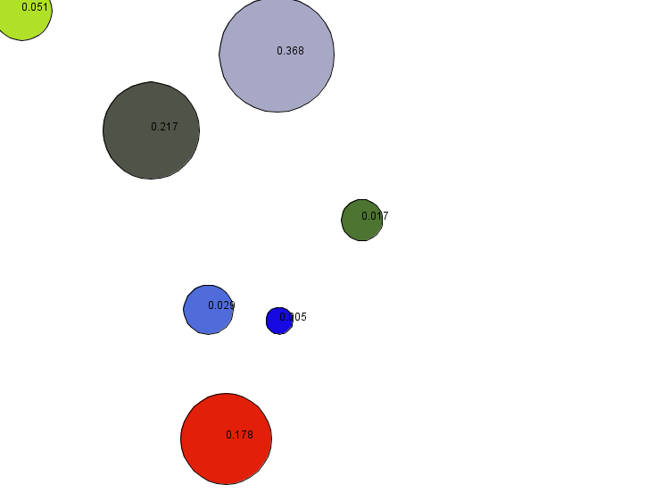

Defining actions and behaviors
Both actions and behaviors can be seen as methods in OOP. They can be defined in any species.
Index
Action
Declare an action
An action is a function run by an instance of species. An action can return a value (in that case, the type of return has to be specify just before the name of the action), or not (in that case, you just have to put the keyword action before the name of the action).
species my_species {
int action_with_return_value {
// statements...
return 1;
}
action action_without_return_value {
// statements...
}
}
Arguments can also be mandated in your action. You have to specify the type and the name of the argument:
action action_without_return_value (int argA, float argB) {
// statements...
}
If you want to have some optional arguments in the list, you can give some by default values to turn them optional. Nb: it is better to define the optional arguments at the end of the list of argument.
action my_action (int argA, float argB <- 5.1, point argC <- {0,0}) {
// statements...
}
Call an action
To call an action, you have to use the statement do. You can use the statement do different ways:
- With facets : after specifying the name of your action, you can specify the values of your arguments as if the name of your arguments were facets:
do my_action argA:5 argB:5.1;
- With parenthesis : after specifying the name of your action, you can specify the values of your arguments in the same order they were declared, between parenthesis:
do my_action (5,5.1);
We incite you to promote the second writing. To catch the returned value, you can also skip the do statement, and store the value directly in a temporary variable:
int var1 <- my_action(5,5.1);
Behavior
A behavior, or reflex, is an action which is called automatically at each time step by an agent.
reflex my_reflex {
write ("Executing the inconditional reflex");
// statements...
}
With the facet when, this reflex is only executed when the boolean expression evaluates to true. It is a convenient way to specify the behavior of agents.
reflex my_reflex when:flip(0.5) {
write ("Executing the conditional reflex");
// statements...
}
Reflex, unlike actions, cannot be called from another context. But a reflex can, of course, call actions.
Nb : Init is a special reflex, that occurs only when the agent is created.
Example
To practice a bit with those notions, we will build an easy example. Let’s build a model with a species balloon that has 2 attributes: balloon_size (float) and balloon_color (rgb). Each balloon has a random position and color, his aspect is a sphere. Each step, a balloon has a probability to spawn in the environment. Once a balloon is created, its size is 10cm, and each step, the size increases by 1cm. Once the balloon size reaches 50cm, the balloon has a probability to burst. Once 10 balloons are destroyed, the simulation stops. The volume of each balloon is displayed in the balloon position.

Here is one of the multiple possible implementation:
model burst_the_baloon
global{
float worldDimension <- 5#m;
geometry shape <- square(worldDimension);
int nbBaloonDead <- 0;
reflex buildBaloon when:(flip(0.1)) {
create species:balloon number:1;
}
reflex endSimulation when:nbBaloonDead>10 {
do halt;
}
}
species balloon {
float balloon_size;
rgb balloon_color;
init {
balloon_size <- 0.1;
balloon_color <- rgb(rnd(255),rnd(255),rnd(255));
}
reflex balloon_grow {
balloon_size <- balloon_size + 0.01;
if (balloon_size > 0.5) {
if (flip(0.2)) {
do balloon_burst;
}
}
}
float balloon_volume (float diameter) {
float exact_value <- 2/3*#pi*diameter^3;
float round_value <- (round(exact_value*1000))/1000;
return round_value;
}
action balloon_burst {
write "the baloon is dead !";
nbBaloonDead <- nbBaloonDead + 1;
do die;
}
aspect balloon_aspect {
draw circle(balloon_size) color:balloon_color;
draw text:string(balloon_volume(balloon_size)) color:#black;
}
}
experiment my_experiment type:gui
{
output{
display myDisplay {
species balloon aspect:balloon_aspect;
}
}
}